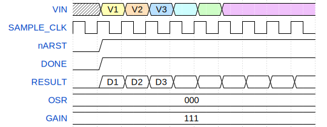

Pepper T4 ADC#
Note
This is the v0.0.1 pre-release documentation of the ADC. Certain aspects of the design will change and verification data is not final.
The Pepper-T4 ADC is a 10 bit Successive Approximation Register (SAR) Data Converter with noise-shaping techniques to provide reconfigurable precision up to 16 bits. This document aims to describe the specifications, implementation and usage. The top level interface is shown on here with digital and analog sections.

Outline#
This data converter consists of three main components; the capacitor array for SAR conversion, the analog loop filter for noise filtering, and the digital controller. Each providing specialized functionality to realize a Noise Shaping Successive Approximation Register (NSSAR) ADC.
The expected configuration here is to use an oversampling-ratio of 18 to provide
14 bits of precision. A digital filter is integrated into the ADC that decimates
the SAR output and times the internal controls appropriately when apply a
specific OSR<3:0> configuration. This also implies that it is up to the system
to provide the correct SAMPLE_CLK frequency to garantee the desired sampling
rate.
The sampling frequency should be adjusted according to the desired oversampling ratio, that is
fsampling = 2 * fnyquist * (OSR * 4 + 2). When OSR is not zero there is a minimum
oversampling ratio of 6 and each OSR code increments this factor by 4.
The DONE flag is generated to specify when the data is ready and should
be used the trigger when input should be multiplexed. This signal
resets both the analog-loop filter and the decimation integrators and
garantees independent conversions. The maximum over sampling ratio is 62.
When the OSR code is zero the noise-shaping functionality is by passed and
the 10 bit sar result is directly available on the lower bits of the
RESULT<15:0> output when the gain is at 15. For basic SAR operation
the analog must also be disabled using the ANALOG_ENABLE flag.
Attention
Changes in OSR changes the gain during decimation as more samples are
accumulated together. In order to normalize this effect a GAIN<3:0> setting
is provided that adds varying levels of digital gain to the output.
TODO! Consider adding digital overflow detection
ADC Signals#
This is an overview for the top-level signals seen at the interface. They have been catagorized into digital, analog, config, and dft sections.
ADC Digital Control Signals#
These signals are expected to be tightly controlled during system integration and are normally the only dynamic digital signals. The digital outputs should be sampled on the rising edge of the sampling clock.
Name |
Direction |
Description |
|---|---|---|
SAMPLE_CLK |
Input |
ADC Sample Control Signal |
nARST |
Input |
Asynchronous Reset Control |
RESULT<15:0> |
Output |
Decimated ADC Output |
DONE |
Output |
ADC Output Ready Trigger |
ADC Analog Signals#
These are the analog signals and must be seperately from the digital contraints.
Name |
Direction |
Description |
|---|---|---|
DVDD |
Input |
Core Digital Supply |
DGND |
Input |
Core Digital Ground |
REFC |
Input |
ADC Common Mode Reference Voltage |
REFN |
Input |
ADC Negative Reference Voltage |
REFP |
Input |
ADC Positive Reference Voltage |
VIN |
Input |
Negative Analog ADC Input |
VIP |
Input |
Positive Analog ADC Input |
IBIAS_500N_PTAT |
Input |
500nA P-Side Input Bias Current |
ANALOG_TEST |
Output |
Analog Debug Output |
ADC Static Config Signals#
These are the digital configuration flags and should be kept static during sampling. They are not resynchronized internally and must be glitch-free.
Name |
Direction |
Description |
|---|---|---|
ANALOG_ENABLE |
Input |
Enable Control Loopfilter |
CHP_EN |
Input |
Chopper Enable Control |
DWA_EN |
Input |
Dynamic Weighted Average Enable Flag |
MES_EN |
Input |
Mismatch Error Shaping Enable Flag |
GAIN<3:0> |
Input |
Digital Gain Setting |
OSR<3:0> |
Input |
Over Sampling Ratio |
ADC Digital Test Controls#
These are the digital design-for-test controls and allow debugging of the internal state. Additionally we can override certain parts of the FSM for more flexible operation or higher oversampling-ratios.
Name |
Direction |
Description |
|---|---|---|
EXT_CLK_EN |
Input |
External Clock Enable Control |
EXT_CLK |
Input |
External Clock Control |
ANALOG_RESET_OVERRIDE |
Input |
Mismatch Error Shaping Enable Flag |
ANALOG_RESET_OVERRIDE_VAL |
Input |
Mismatch Error Shaping Enable Flag |
ANALOG_TEST_SELECT<2:0> |
Input |
Analog Test Signal Selection Control |
DIGITAL_DEBUG_SELECT<2:0> |
Input |
Analog Test Signal Selection Control |
DONE_OVERRIDE |
Input |
Done Override Control |
DONE_OVERRIDE_VAL |
Input |
Done Override Value |
DIGITAL_DEBUG |
Output |
Digital Debug Output |
ADC Timing Diagrams#
This section specifies the timing relation for the [Digital Control Signals] for SAR & NSSAR operating modes.
Attention
The sampling process always TRACKS the input signal when SAMPLE_CLK
is high. This means that the signal is SAMPLED on the falling edge while the
FSM is triggered on the rising edge.
Asynchronous SAR Mode#
Asynchronous mode is automatically detected when the OSR control is set to 0 (i.e. all bits are low) and GAIN to 15. This completely by-passes the decimation block and relies only on the asynchronous operation of the SAR.
{kind=link}
From the timing diagram we see the SAR process completes within one clock
cycle and to be more precise it completes when the clock is low. In this case
DONE is always high and we can switch the analog input when SAMPLE_CLK is low.
This mode may slightly increase the current draw on the common-mode reference as the analog circuits buffering this voltage are disabled. However it is assumed that we operate at a low frequency less than 10 kHz and this reference is only used during sampling so there will be more than 50 us to settle on this voltage.
Noise-Shaping SAR Mode#
The noise-shaping mode is slightly more conventional as the DATA is only available
after 4*OSR+2 clock cycles. However similarly to the SAR mode the signal is
always sampled on the falling edge so we should be careful when the input is
switched.
{kind=link}
ADC Specifications#
Parameter |
Symbol / Unit |
Typical / Requirement |
Description / Notes |
|---|---|---|---|
ADC Name / Identifier |
— |
|
Primary system analog-to-digital converter. |
Architecture Type |
— |
Successive Approximation (SAR) |
Common choice for medium-speed, high-accuracy applications. |
Resolution |
N (bits) |
16 bits |
Number of output quantization levels (2ⁿ). |
Number of Channels |
— |
1 (differential) |
Total multiplexed input channels. |
Input Type |
— |
Differential |
The inputs should reference the common-mode reference which must be at REFP/2. |
Input Voltage Range |
VIN (V) |
0 – 1.8 V |
Analog input range referenced to analog ground. |
Reference Voltage |
VREF (V) |
1.8 V (external) |
Reference used for full-scale range and accuracy. |
Reference Noise |
VNOISE (Vrms) |
25 uVrms |
Tolerable integrated reference noise level for 16 bit accuracy. |
Sampling Rate (max) |
fS,max (S/s) |
144 kS/s |
Maximum aggregate sampling rate. |
Effective Number of Bits |
ENOB (bits) |
10.0 - 16.0 |
Effective resolution including noise and distortion effects. |
Integral Nonlinearity (max) |
INL (LSB) |
±1 LSB |
Deviation of transfer function from ideal straight line. |
Differential Nonlinearity (max) |
DNL (LSB) |
±0.5 LSB |
Step size deviation between adjacent codes. |
Offset Error |
VOS (mV) |
±2 mV |
DC offset between ideal and actual conversion threshold. |
Gain Error |
— |
±1 % FS |
Deviation of slope from ideal transfer characteristic. |
Tracking Time |
TSMP (s) |
3.47 µs |
Effective sampling time for 144 kS/s operation |
Input Capacitance |
CIN (pF) |
26 pF |
Equivalent capacitance seen at each input channel. (single ended) |
Input Resistance |
RIN (MΩ) |
130 kΩ |
Typical input impedance of the sampling network. (single ended) |
Source Impedance |
RS (kΩ) |
25 kΩ |
Typical signal source impedance for adc sampler. (single ended) |
SNR (Signal-to-Noise Ratio) |
SNR (dB) |
87 dB |
Ratio of signal amplitude to noise floor. |
THD (Total Harmonic Distortion) |
THD (dB) |
–100 dB |
Measures harmonic distortion relative to fundamental. |
Power Supply Voltage |
VDD,ANA (V) |
1.8 V ± 10 % |
Analog supply voltage. |
Current Consumption |
ITOT (uW) |
22.5 uA |
Total current draw at 144 kS/s. |
Power Consumption |
PTOT (uW) |
40.5 uW |
Total power including analog and digital domains at 144 kS/s. |
Figure of Merit |
FOMW (fJ/cov) |
300 fJ/conv |
ADC Power Efficiency Metric. |
Operating Temperature Range |
TOP (°C) |
–40 °C to +85 °C |
Ambient temperature range. |
Interface Type |
— |
16 bit Parallel |
Communication interface to digital subsystem. |
Conversion Latency |
tLAT (µs) |
TBD |
Time delay between sampling instant and valid output code. |
Clock Source |
— |
|
Determines conversion timing and jitter. |
Jitter (Aperture) |
tJ (ps RMS) |
<3 ns |
Sampling uncertainty affecting SNR at high frequencies for 16 bit accuracy. |
ESD Protection |
— |
±2 kV (HBM) |
Minimum electrostatic discharge rating. |
Notes / Comments |
— |
— |